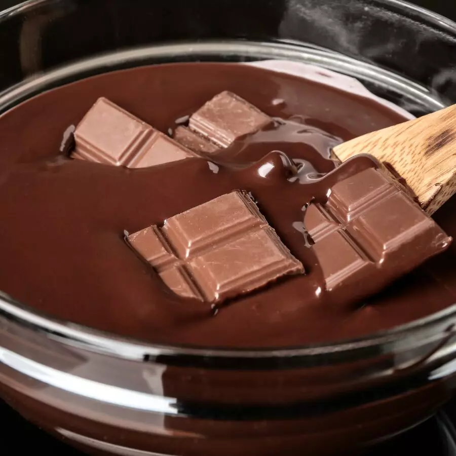
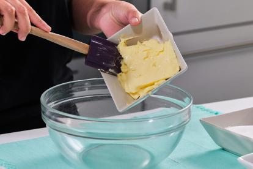

FRESAS UNTADAS EN CHOCOLATE
- INGREDIENTES
- PASO A PASO
- RESULTADO
INGREDIENTES
- 1 kg de fresas
- 250 g de chocolate osucro sin azúcar en tableta
- 3 cucharadas soperas de mantequilla
PASO A PASO
- Lavar las fresas con abundante agua, pero teniendo cuidado de no magullarlas. Dejar escurrir en un colador para que se sequen. Dejar la parte verde con las hojas, ya que adornan la fruta para su presentación. Reservar. Picar el chocolate en trozos pequeños para que se funda rápidamente.
- Poner los trozos de chocolate en un recipiente apto para microondas. Tapar el recipiente con papel film.

- Programar a 30 segundos el microondas para fundir el chocolate. Retirar y remover. De ser necesario, programar el microondas para 30 segundos más, hasta que se funda totalmente el chocolate.
- Retirar del microondas y añadir la mantequilla. Mezclar muy bien. Colocar papel de horno sobre una bandeja. Introducir un palillo sobre la zona de las hojitas verdes e introducir bien dentro de la fresa. Tomar el palillo y sumergir la fresa dentro de la fuente con chocolate y colocarlas sobre la bandeja para que enfríe el chocolate. Repetir esta acción con todas las fresas.

RESULTADO FINAL